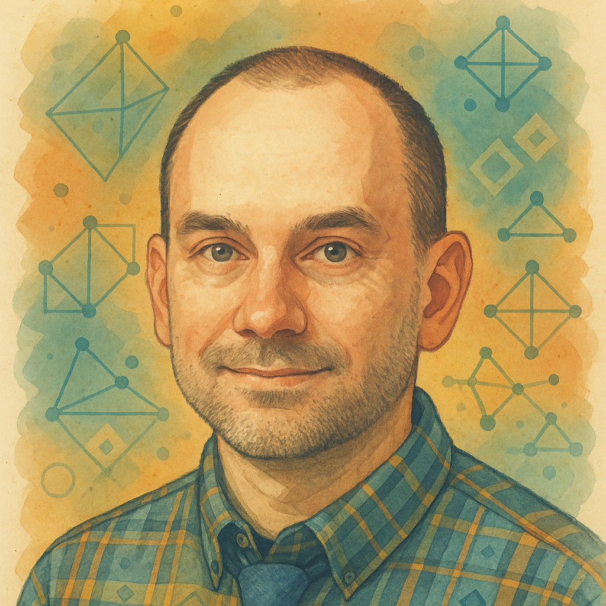
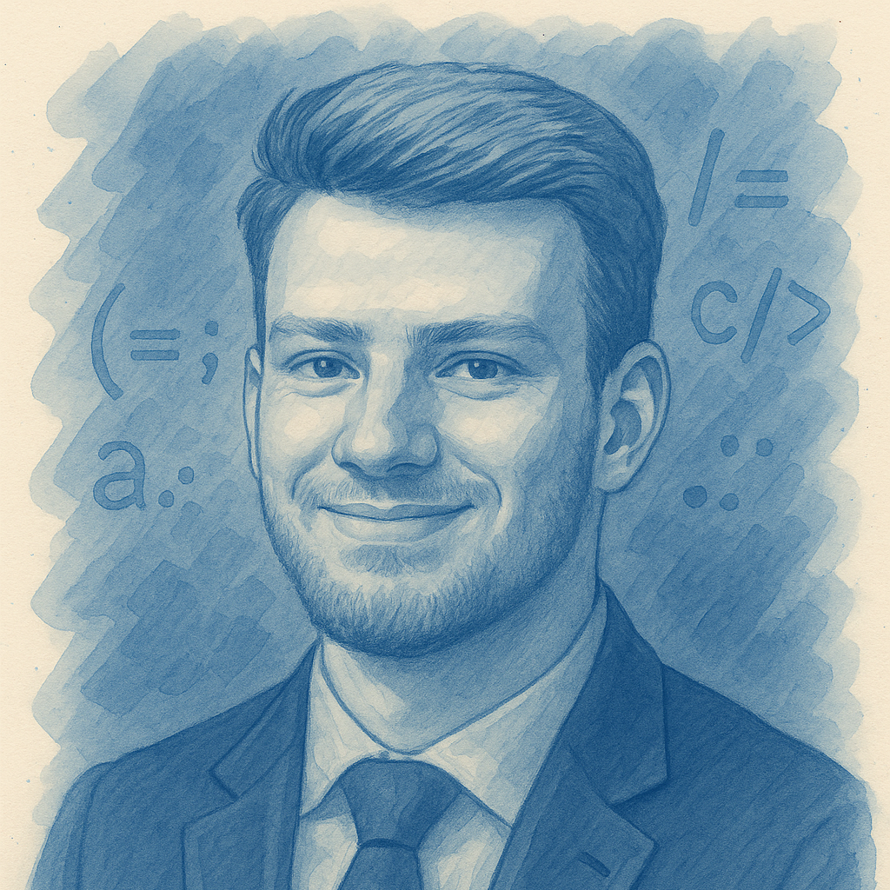
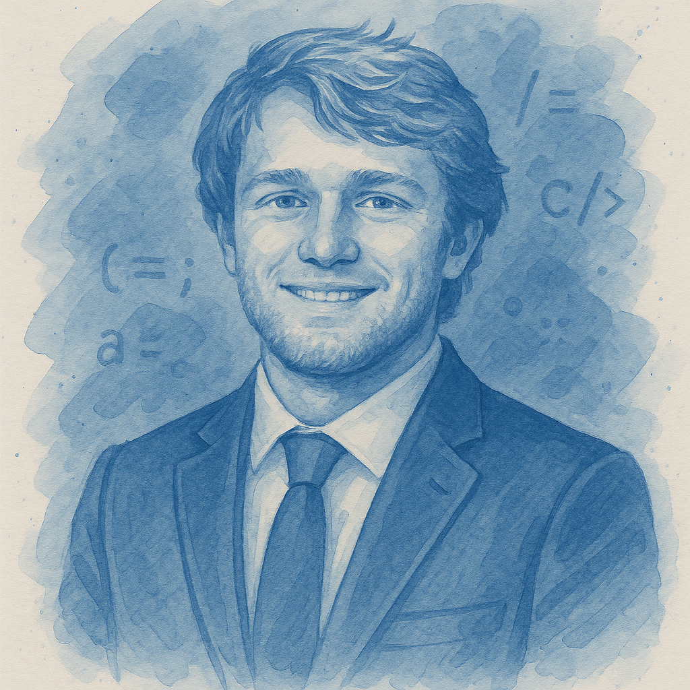

Charles is a professor of computer science at Hope College who specializes in combinatorics and algorithmic art. He leads the development of DAIADS. (2025–present)

As an undergraduate student, Caiden helped design interactive demos and contributed examples for graph theory and sorting topics. (2025)

As an undergraduate student, Connor helped design interactive demos and contributed examples for graph theory and sorting topics. (2025)
Additional collaborators have contributed ideas, feedback, testing, and editorial assistance throughout the project.
Generative AI tools have been used extensively to assist with drafting, revision, programming, code review, examples, images, and interactive-demo development. These tools have included OpenAI products such as ChatGPT and Codex, Anthropic's Claude models, and GitHub Copilot.
AI output is treated as draft material. Human authors and editors remain responsible for reviewing, testing, correcting, and approving material before publication.
Development tools used on the project include Visual Studio Code, Notepad++, Git, and GitHub.
DAIADS is still growing, and additional financial support is welcome. If you or someone you know may be interested in funding student contributors, new content, interactive demonstrations, accessibility improvements, or other development work, please email algoraph@hope.edu.
Except where otherwise noted, original DAIADS educational content, including text, exercises, figures, diagrams, and other non-software material, is licensed under the Creative Commons Attribution-ShareAlike 4.0 International license (CC BY-SA 4.0). Reuse requires appropriate attribution, an indication of changes, and distribution of adaptations under the same license. Commercial reuse is permitted when these requirements are followed.
Except where otherwise noted, original DAIADS software code, including site scripts, interactive demos, and code examples, is licensed under the GNU General Public License, version 3 (GPLv3). The GPL requires redistributed versions and modifications to remain available under the GPL.
Third-party libraries, fonts, images, trademarks, linked resources, and other third-party material retain their original licenses and terms. See the repository's licensing overview for the complete scope statement and suggested attribution.
Suggested citation:
Cusack, C. (2025). Design, Analysis, and Implementation of Algorithms and Data Structures. Hope College. https://cusack.hope.edu/DAIADS.
Feedback, corrections, questions, content contributions, collaboration proposals, and funding inquiries are welcome. Please email algoraph@hope.edu.